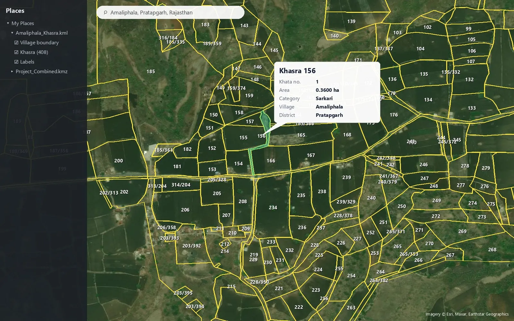

How to open a khasra map (KML) in Google Earth

A georeferenced khasra map in KML or KMZ format opens directly on top of satellite imagery. You can see every khasra boundary on the real fields, read its number, click it for details and measure areas - without any GIS training.
Option 1 - Google Earth Pro (Windows / Mac)
- Install the free Google Earth Pro desktop application.
- Double-click the .kml or .kmz file - or use File > Open.
- The map appears in Places > Temporary Places and the view flies to the village.
- Right-click the layer > Save to My Places to keep it for the next time.
Option 2 - Google Earth on the web
- Open earth.google.com in Chrome.
- Projects > New project > Import KML file from computer.
- Choose the file - the khasra layer is drawn on the 3D globe.
Option 3 - Google My Maps (share with your team)
- Open google.com/mymaps > Create a new map.
- Import > upload the KML file.
- Share the map link with your land team or client - they see it on any phone.
Find a khasra number
Click any plot to open its balloon: khasra number, khata, area and land category. In Google Earth Pro you can also search the layer: type the khasra number in the search box of the Places panel.
Measure an area or a distance
Use the Ruler tool (Tools > Ruler in Google Earth Pro, or the ruler icon on the web). Choose Polygon to measure an area in hectares or acres, or Line / Path for distances along a road or a transmission line.
Tips
- Tilt the view (hold Shift and drag) to see the khasras on the 3D terrain.
- Turn labels off in the layer if the map looks crowded at a low zoom.
- A KMZ file is just a zipped KML - Google Earth opens both.
Need khasra maps or a survey?
Georeferenced and digitized khasra maps in KML, DWG, SHP and Excel for 20 states, plus DGPS, Total Station, topographic and drone surveys. Single village orders welcome.